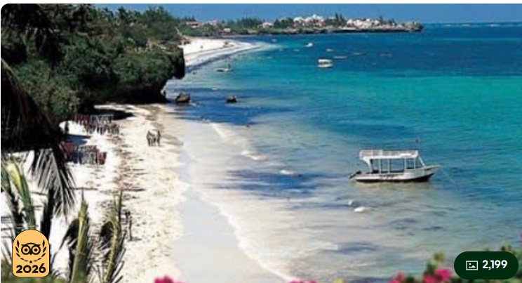

Home of Kenya's Marine Paradise

Watamu is a beautiful coastal town located in Kilifi County, about 120 km north of Mombasa. It is world-famous for the Watamu Marine National Park, crystal-clear waters, coral reefs, dolphins, and sea turtles. It is one of Kenya's best destinations for marine tourism and nature lovers.
July to March offers warm weather, calm seas, and excellent conditions for diving, snorkeling, and marine excursions.
| Package | Price |
|---|---|
| Marine Park Tour | From KSh 10,000 |
| Glass Bottom Boat Ride | AS LOW ASFrom KSh 1,500 |
| Beach Photography | FREE |